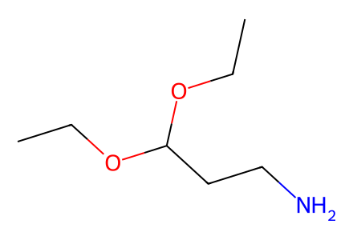
CCOC(CCN)OCC13 个结构，8 个制备事件；其中目标路线 5 步，另有 3 个对照制备事件。采用 canonical isomeric SMILES，保留混合物、盐形式和原文编号冲突。仅覆盖现有 SI，待独立专家复核。
完整 JSON · 逐步 CSV · 路线序列 · SDF · HRMS 核对
| 事件 | 分子连接 | 报告产率 | Canonical reaction SMILES |
|---|---|---|---|
| E01 | aminoacetal + bromohexene → 6 | 6: 63% | C=CCCCCBr.CCOC(CCN)OCC>>C=CCCCCNCCC(OCC)OCC |
| E02 | 6 + hexenoic-acid → 7 | 7: 83% | C=CCCCC(=O)O.C=CCCCCNCCC(OCC)OCC>>C=CCCCCN(CCC(OCC)OCC)C(=O)CCCC=C |
| E03 | 7 + tryptamine → 3 | 3: 85% | C=CCCCCN(CCC(OCC)OCC)C(=O)CCCC=C.NCCc1c[nH]c2ccccc12>>C=CCCCCN(CCC1NCCc2c1[nH]c1ccccc21)C(=O)CCCC=C |
| E04 | 3 → 4 | 4: 23% | C=CCCCCN(CCC1NCCc2c1[nH]c1ccccc21)C(=O)CCCC=C>>O=C1CCCC=CCCCCN1CCC1NCCc2c1[nH]c1ccccc21 |
| E05 | 4 → 2 | 2: 38% | O=C1CCCC=CCCCCN1CCC1NCCc2c1[nH]c1ccccc21>>C1=CCCCCN(CCC2NCCc3c2[nH]c2ccccc32)CCCC1 |
| E06 | 3 → 13 | quantitative | C=CCCCCN(CCC1NCCc2c1[nH]c1ccccc21)C(=O)CCCC=C>>C=CCCCCN(CCC1c2[nH]c3ccccc3c2CC[N+]1(C)C)C(=O)CCCC=C.[I-] |
| E07 | phenylpropylamine + bromohexene → 17 | 17: 23% | C=CCCCCBr.NCCCc1ccccc1>>C=CCCCCNCCCc1ccccc1 |
| E08 | 17 + hexenoic-acid → 15 | 15: 23% | C=CCCCC(=O)O.C=CCCCCNCCCc1ccccc1>>C=CCCCCN(CCCc1ccccc1)C(=O)CCCC=C |

CCOC(CCN)OCC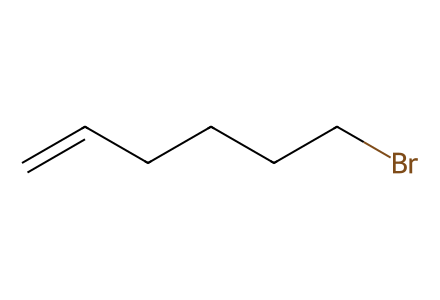
C=CCCCCBr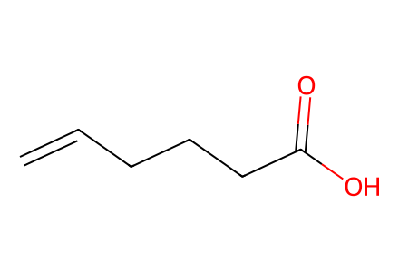
C=CCCCC(=O)O
NCCc1c[nH]c2ccccc12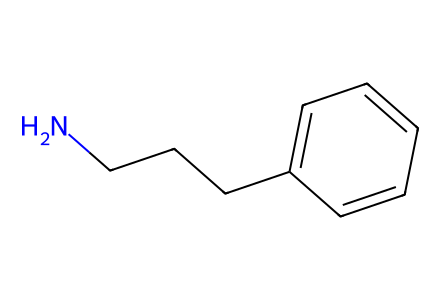
NCCCc1ccccc1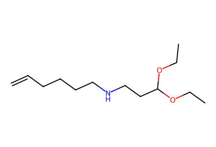
C=CCCCCNCCC(OCC)OCC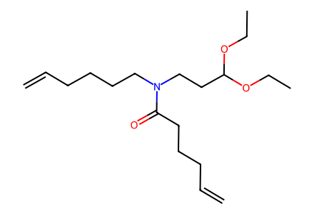
C=CCCCCN(CCC(OCC)OCC)C(=O)CCCC=C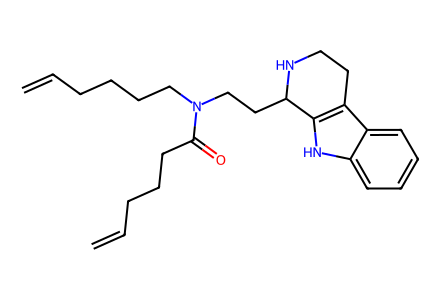
C=CCCCCN(CCC1NCCc2c1[nH]c1ccccc21)C(=O)CCCC=C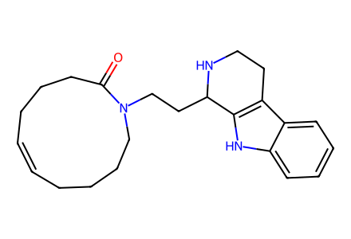
O=C1CCCC=CCCCCN1CCC1NCCc2c1[nH]c1ccccc21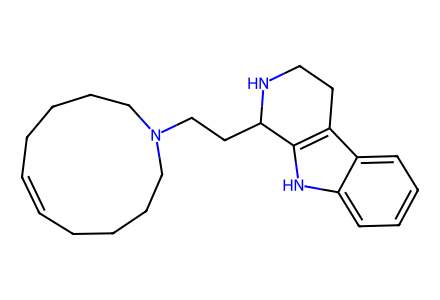
C1=CCCCCN(CCC2NCCc3c2[nH]c2ccccc32)CCCC1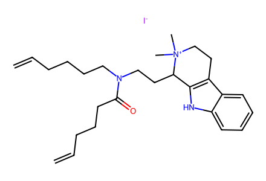
C=CCCCCN(CCC1c2[nH]c3ccccc3c2CC[N+]1(C)C)C(=O)CCCC=C.[I-]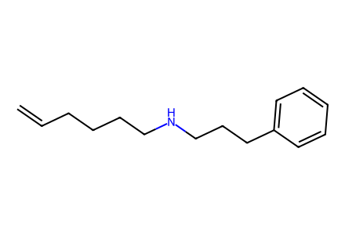
C=CCCCCNCCCc1ccccc1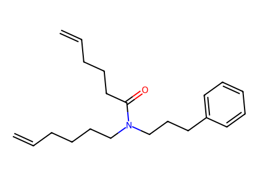
C=CCCCCN(CCCc1ccccc1)C(=O)CCCC=C